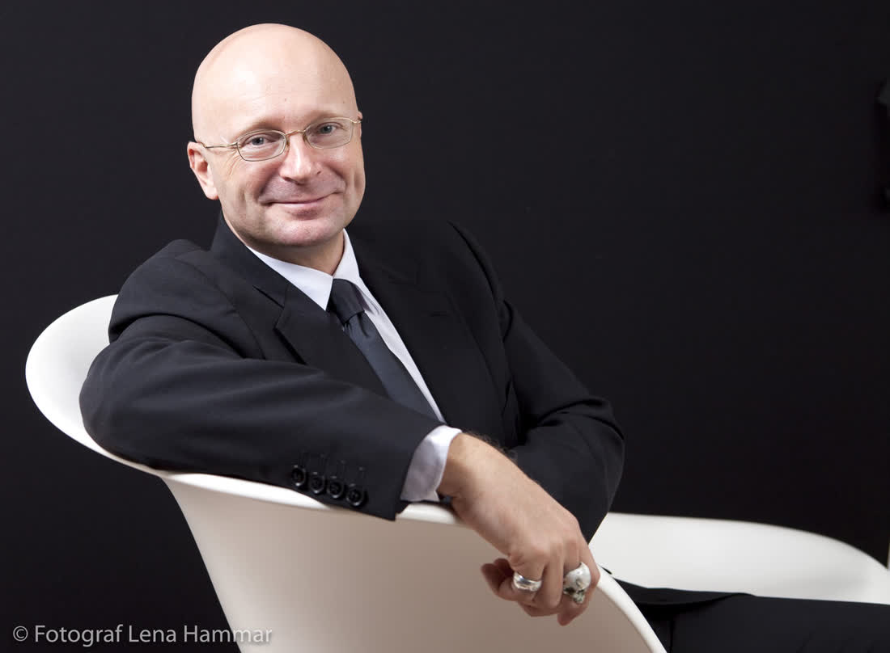

Skog
Tallmoar runt Umeå

Fjäll
Hemavan, Ammarnäs, Abisko

Kust
Höga kusten & Holmön
Jag fotar bröllop i Norrland: på myren, vid älven, på kalfjället en septemberkväll när det är minus två och ni ändå vägrar ta på jackan.
Fråga om ert datumSe bröllopTallmoar runt Umeå
Hemavan, Ammarnäs, Abisko
Höga kusten & Holmön


Vigseln hölls på en klippa som vi gick upp till i 40 minuter. Prästen hade pannlampa. Middagen var renskav i kåtan och dansen fortsatte tills norrskenet tog över.
 Holmön, midsommarafton 23:40
Holmön, midsommarafton 23:40
Innan jag blev fotograf jobbade jag som fjällguide. Det betyder att jag vet var ljuset faller klockan elva på kvällen i juni, och att jag alltid har extra ullsockor i ryggsäcken.
Jag vill att era bilder ska kännas som platsen: kall luft, mygg, skratt och ett ljus ni inte hittar söder om Dalälven.


Bara ni två (och kanske en hund). 3 timmar inkl. vandring och ca 200 bilder.
12 500 kr8 timmar från förberedelser till tårta. Ca 500 bilder och ett tryckt album.
26 900 krTvå dagar: välkomstmiddag, vigsel och morgonpromenad dagen efter.
39 000 kr
"Johanna bar min klänningssläp över en bäck och fick ändå de vackraste bilderna jag sett."Sara & Henrik — Hemavan 2025
Då blir det ännu bättre bilder. Jag har paraplyer i genomskinlig plast i bilen.
Ja, men mitt hjärta är här. Resa och boende tillkommer söder om Sundsvall.
Absolut, jag har en lista med 30 hemliga ställen jag gärna delar.
Det finns platser fem minuter från bilen som ser ut som Lappland.
Skriv några rader så hör jag av mig, oftast samma kväll när jag kommit hem från skogen.


